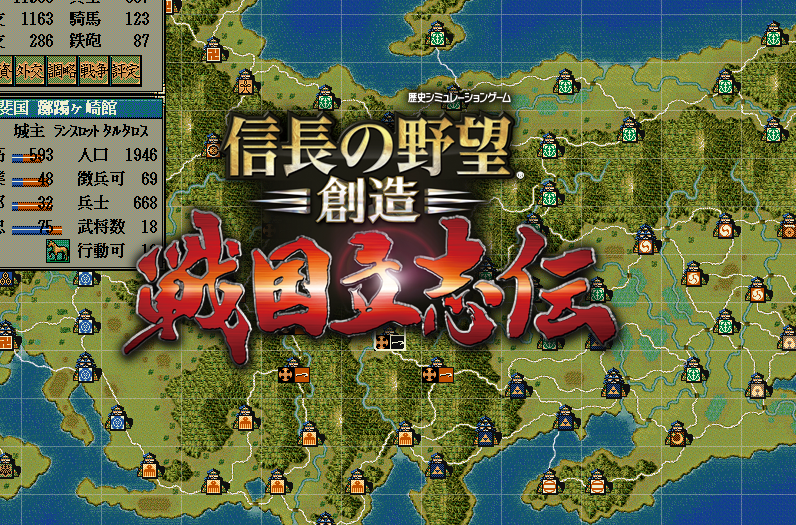

ここは、天翔記の画面に上に、別プロセスで起動して
画像を表示する例となります。

天翔記ディレクトリに「haru.png」というファイル名で用意してください。
ネット経由でzipをダウンロードするわけですから、zipに対して「プロック解除」すること。
SpriteWPFTS95.zipを解凍すると、SpriteWPFTS95.exeが入っています。
このexeを天翔記フォルダに入れてください。
SpriteWPFTS95.exeは、
何かのウィンドウの上に画像をフェイドインして表示し、フェイドアウトで自動で消える
といった汎用目的で利用可能なプログラムとなります。
別プロセスでありながら、天翔記の上に確かに表示されますが、
まるでそこに画像は存在しないかのような、Windowsにおいてあまり見たことが無い挙動となります。
応用編なため、内容の詳細について触れることはしません。
コメント等を参考に、ご自身で中身をチェックしてください。
カスタム駆動関数.cppの上部に以下のように追記してみましょう。
独立したヘッダーファイルにしてincludeするようにしても良いでしょう。(むしろそっちの方が理想的)
#include "カスタム駆動関数.h"
using namespace System;
using namespace System::Collections::Generic;
using namespace System::Diagnostics;
ref class GlobalSpriteProcess {
private:
static Dictionary<String^, Process^>^ hashSpriteProcess = gcnew Dictionary<String^, Process^>();
static HWND hTenshouWnd;
public:
// プロセスの開始
static Process^ StartProcess(String^ strProcessHashKey, String^ strImageFileName, int timeFadeIn, int timeFadeKeep, int timeFadeOut) {
if (!hTenshouWnd) {
hTenshouWnd = FindWindow("Tenshouki95", NULL);
}
UpdateProcessList();
try {
ProcessStartInfo^ psi = gcnew ProcessStartInfo();
psi->FileName = "SpriteWPFTS95.exe";
psi->Arguments = String::Format("{0} {1} {2} {3} {4} {5}", (Int64)hTenshouWnd, strImageFileName, "png", timeFadeIn, timeFadeKeep, timeFadeOut);
psi->UseShellExecute = false;
auto p = gcnew Process;
hashSpriteProcess[strProcessHashKey] = p;
p->Start(psi);
return p;
}
catch (Exception^) {
}
return nullptr;
}
// プロセスを明示的に終了
static void CloseProcess(String^ strProcessHashKey) {
try {
auto p = hashSpriteProcess[strProcessHashKey];
if (p != nullptr && !p->HasExited) {
p->Close();
}
hashSpriteProcess[strProcessHashKey] = nullptr;
}
catch (Exception^ e) {
}
}
private:
static void UpdateProcessList() {
for each (auto kvp in hashSpriteProcess) {
try {
auto p = kvp.Value;
// もし該当プロセスがすでに実行を終了してるならば、辞書からは削除しておく。
if (p->HasExited) {
hashSpriteProcess->Remove(kvp.Key);
}
}
catch (Exception^) {
}
}
}
};
カスタム::カスタム() {
// 各メソッドの具体的な解説は「http://天翔記.jp/?page=nobu_mod_the_snmod_methodref_index」にて記述されています。
}
// ・・・
みたいな形で、「SpriteWPFTS95.exe」を外部プログラムとしてScenarioMod内から呼び出しやすい(マネージ)クラスを作成しましょう。
void カスタム::On_プレイヤ担当ターン《メイン画面》() {
if (p年情報.季節 == 季節::春) {
GlobalSpriteProcess::StartProcess("kisetu_haru", "haru.png", 200, 2000, 200);
}
}